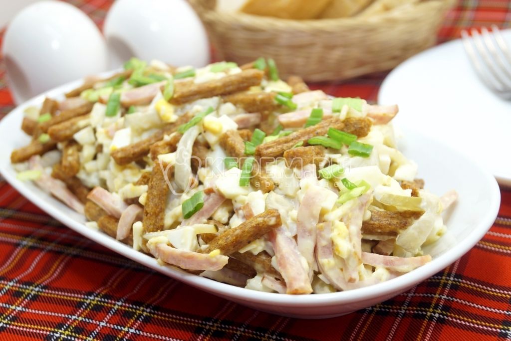

Салат "Остров"
Салат с сухариками «Остров», это простой и вкусный салат для любого повода.
Ингридиенты:

Полукопченая колбаса 120 г
Сухарики 100 г
Сырок плавленый 1 по вкусу
Яйца 2 шт
Огурцы маринованные 2 шт
Майонез 2 ст. л.
Зеленый лук
Приготовление
Яйца отварить, отсудить и очистить.
В миску нарезать соломкой колбасу и огурцы.
Добавить нашинкованные яйца и тертый сыр.
Заправить салат майонезом, перемешать и добавить сухарики. Немного перемешать.
Выложить в салатницу и посыпать мелко нашинкованным зеленым луком.